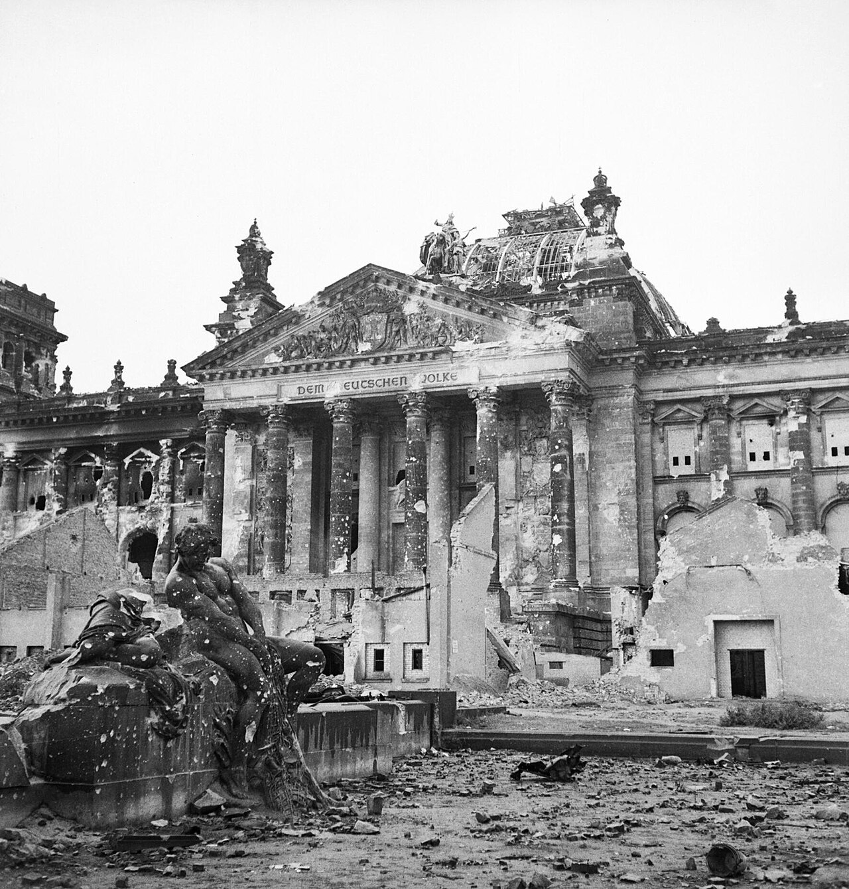
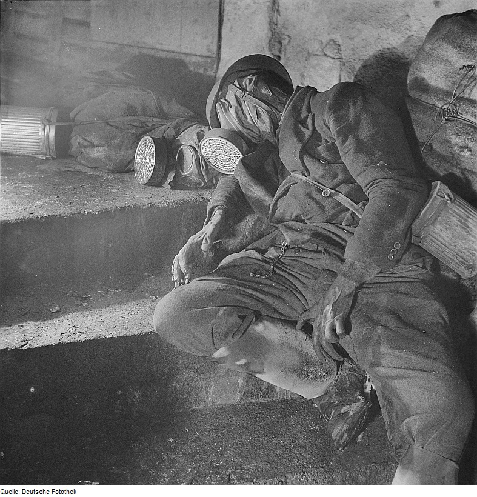

Straty ludnościowe
Niemcy poniosły znaczące straty ludnościowe w wyniku działań wojennych, bombardowań, walk na froncie oraz konsekwencji klęski III Rzeszy. Szacuje się, że zginęło około 6,3 – 7 milionów obywateli Niemiec, w tym żołnierze Wehrmachtu oraz ludność cywilna.
• Około 4,3 – 5,3 mln poległych żołnierzy Wehrmachtu
• Około 1,5 – 2 mln cywilów (bombardowania, ewakuacje, głód, choroby)
• Setki tysięcy ofiar ucieczek i wypędzeń pod koniec wojny
• Znaczne straty wśród dzieci i ludności cywilnej w miastach bombardowanych
Formy strat i represji
Ludność niemiecka doświadczała bombardowań alianckich, walk ulicznych w końcowej fazie wojny, masowych ucieczek przed Armią Czerwoną, a także chaosu i głodu po kapitulacji. Najbardziej dotkliwe wydarzenia obejmowały:
- Bombardowania Drezna, Hamburga, Berlina i innych miast
- Masowe ucieczki ludności cywilnej z Prus Wschodnich
- Walki o Berlin w 1945 roku
- Głód i choroby w pierwszych latach powojennych
- Wypędzenia ludności niemieckiej z Europy Środkowo-Wschodniej
Pamięć
Współczesne Niemcy prowadzą szeroko zakrojone działania edukacyjne i upamiętniające, podkreślając zarówno tragedię wojny, jak i odpowiedzialność historyczną za zbrodnie nazistowskie. W wielu miastach znajdują się pomniki ofiar bombardowań, muzealne ekspozycje oraz miejsca pamięci.
Galeria
Wybrane zdjęcia związane z historią Niemiec podczas II wojny światowej.

